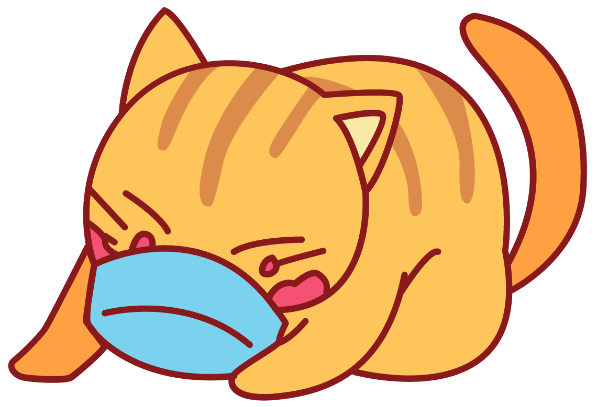
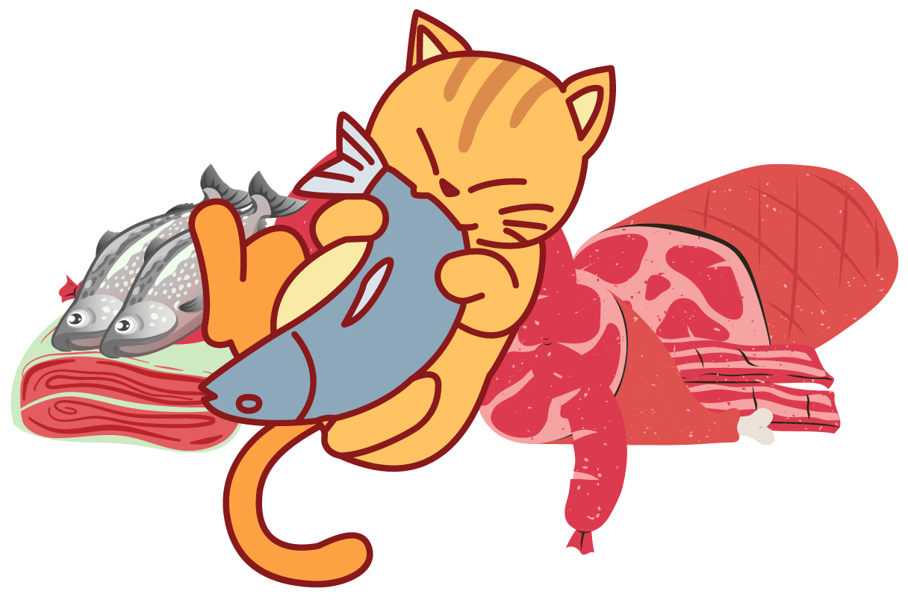
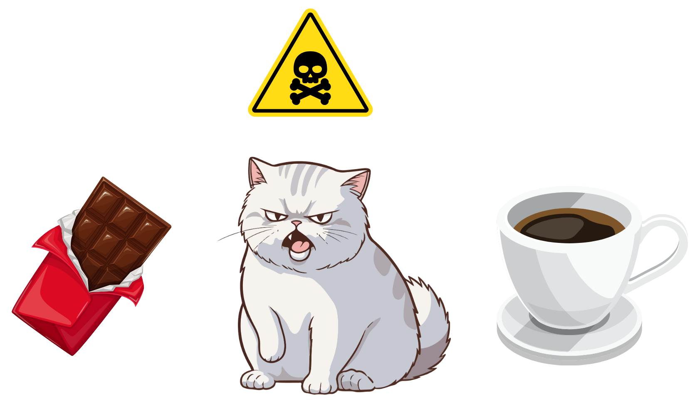
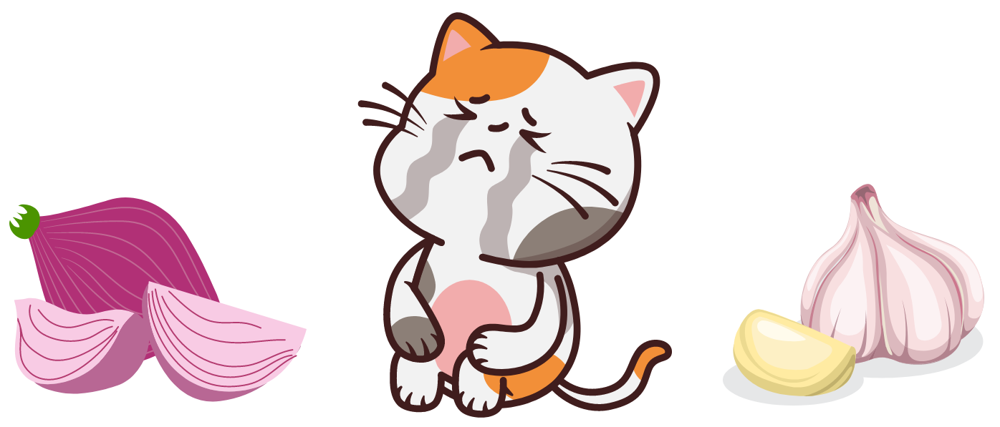
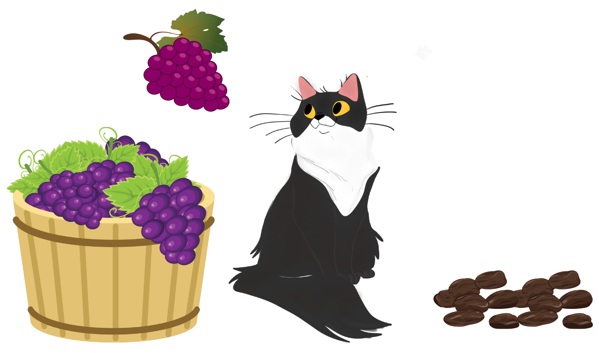
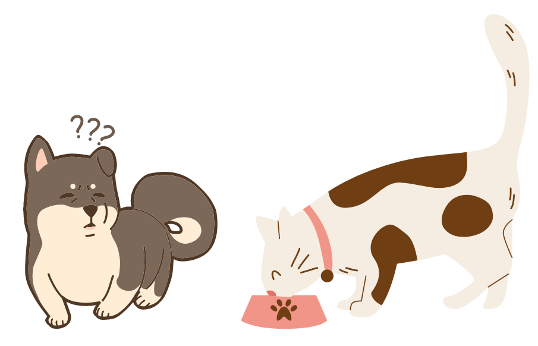

Llegó la hora de comeeer !!
La comida es una parte importante de nuestras vidas, ¡y hay algunas cosas que nos encantan y otras que debemos evitar!
Lo primero, soy un carnívoro obligado, lo que significa que necesito carne para estar saludable. Mi dieta ideal se compone principalmente de proteínas animales, como carne de ave, pescado y carne magra. Eso es lo que me da la energía y los nutrientes que necesito para mantenerme en forma y activo.
Pero ten cuidado, hay cosas que no debo comer. Algunos alimentos pueden ser peligrosos para mí:
-
Chocolate y café:
¡Nunca deben dármelos! Contienen sustancias que son tóxicas para mi pequeño cuerpo.
 -
Cebolla y ajo:
Estos son dañinos para mí, pueden causar problemas en mi sistema sanguíneo.
 -
Uvas y pasas:
Son muy malas para mí y pueden afectar mis riñones.
 -
Productos lácteos:
Aunque me encanta la leche, después de ser un gatito, muchos de nosotros desarrollamos intolerancia a la lactosa cuando crecemos. Puede causar malestar estomacal.

-
Huesos cocidos:
No deben dármelos porque se pueden astillar y causarme daño.

-
Comida para perros:
Aunque a veces puedo comer un poco sin problemas, no es una dieta adecuada para mí. Necesito nutrientes específicos que se encuentran en la comida de gato.

Recuerda, siempre es mejor preguntar a un veterinario antes de darme algo nuevo para comer. Además, mantenerme hidratado es importante, así que asegúrate de que siempre tenga agua fresca disponible.
En resumen, ¡me encanta la carne y necesito proteínas para estar saludable! Pero ten en cuenta que hay muchas cosas que no debo comer, ¡así que manténme seguro y bien alimentado, miau!